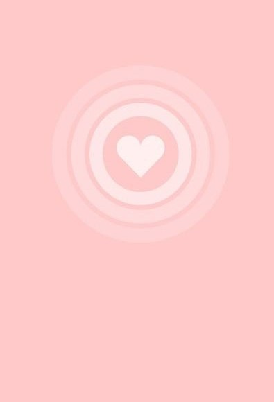
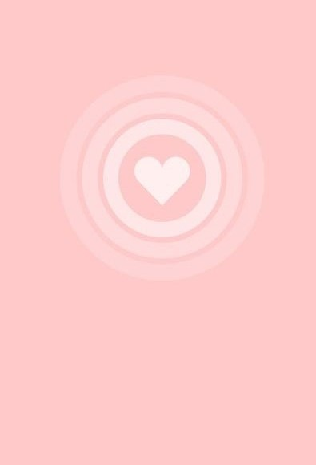

Respuesta de la chica
Hola! que tal? ,
hace mucho tiempo que no hablamos. Se me hace bien extraño volver a hablar contigo, que has
estado haciendo ultimamente? Yo he estado buscando trabajo ya que recientemente me gradue de una maestria y
realmente tengo muchas ganas de conseguir un buen empleo. Espero no te moleste mi gran mensaje. Pero me da gusto
volver a hablar contigo.